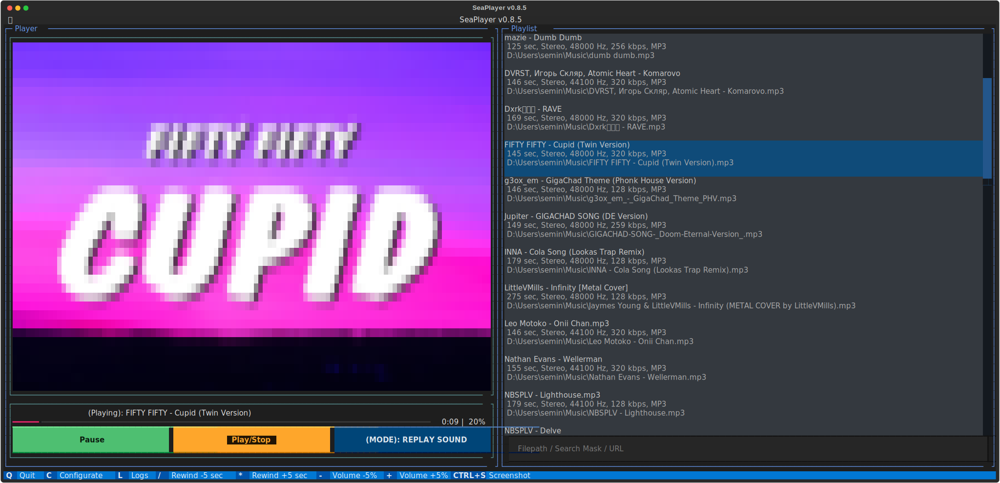
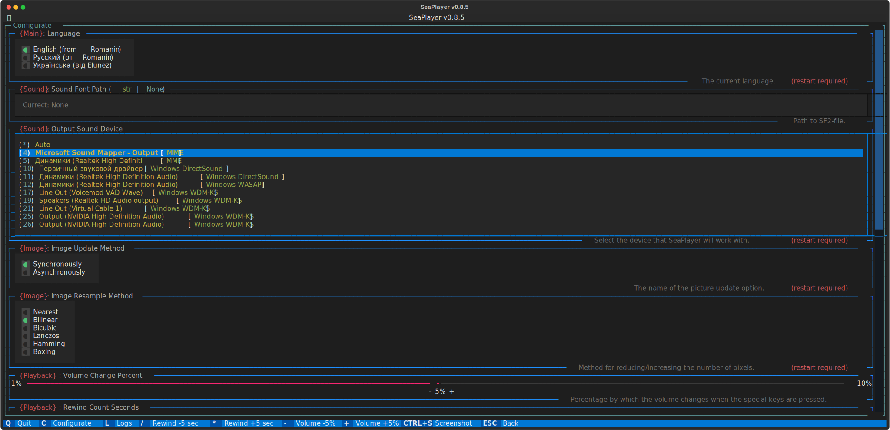

Welcome to SeaPlayer¶
Description¶
SeaPlayer is a player that works in the terminal.
Supports the following audio file formats: MP3, OGG, WAV, FLAC, MIDI.
Supports the following languages: English, Русский, Українська.
Screenshots¶
 
Using¶
Installation¶
Playing for MIDI¶
In order to play MIDI files you need to install FluidSynth.
- Download a zip file suitable for your version of Windows.
- Unpack the archive anywhere, but it is recommended to put it in a folder
C:\Program Files\FluidSynth - Next, open
Settings>System>About the system>Additional system parameters>Environment variables>[Double click on Path]>Create>[Enter the full path to the folder with FluidSynth] - That's it, FluidSynth is installed!